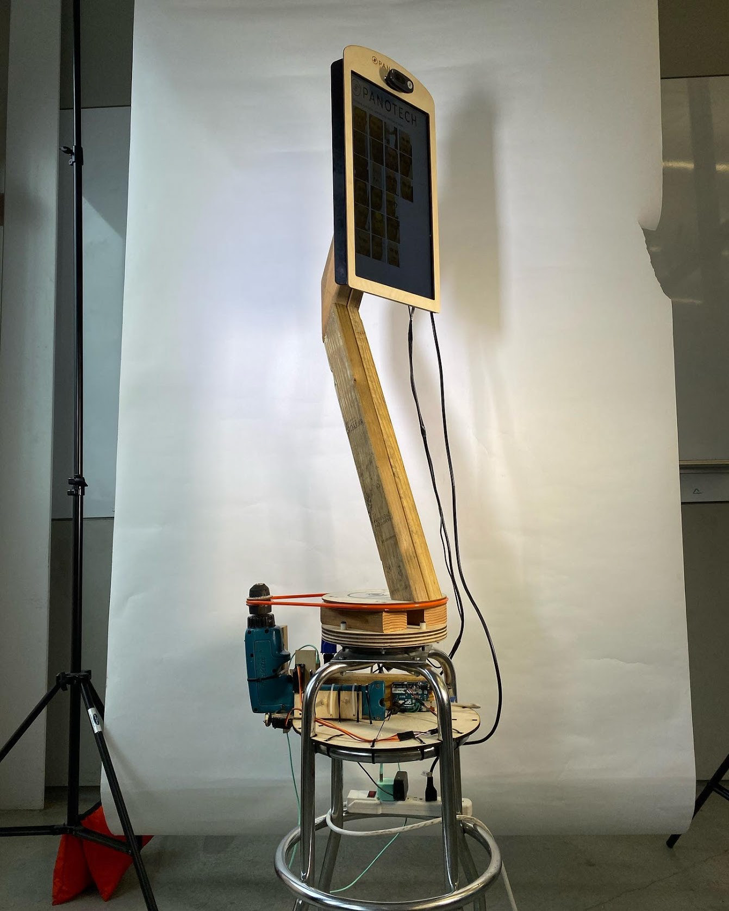

Panotech
Feb 2020
Panotech is a critique of public surveillance and art installation. Panotech tries to give a body to a surveillance system that is normally far too discrete. It was created for Berkeley's Critical Practices class as a final project by Alyssa, Cameron, Serena, and myself.
Panotech got first place in its section at Jacobs Hall's end of semester design showcase and subsequently received an Ignite Grant to pay for the projects continuation.
As of this writing, we are continuing to develop Panotech and you can follow along here.
